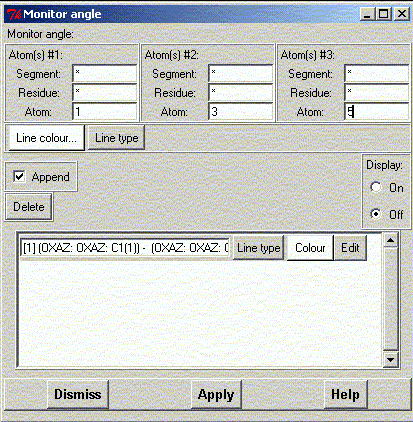
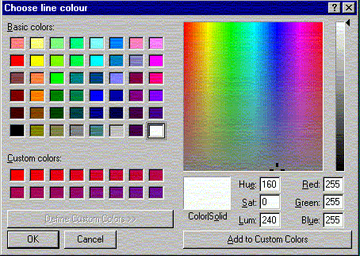
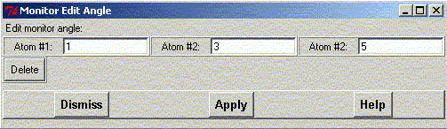

**************************************************************************
Monitor Angle Widget
Leif Laaksonen CSC 2001
**************************************************************************
Select the atom in set #1, #2 and #3 to define an angle, choose an angle colour and click the apply button.
To display the selected angle put the display state to "On"
Press the "Delete all" button to delete all selected angle segments
To edit any of the defined sets press the "Edit" button. Now you can redefine the selected atoms or delete this particular defined angle.

Choose the angle colour from the colour menu.


Line command: see monitor command
**************************************************************************
LUL/2001
**************************************************************************